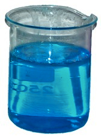
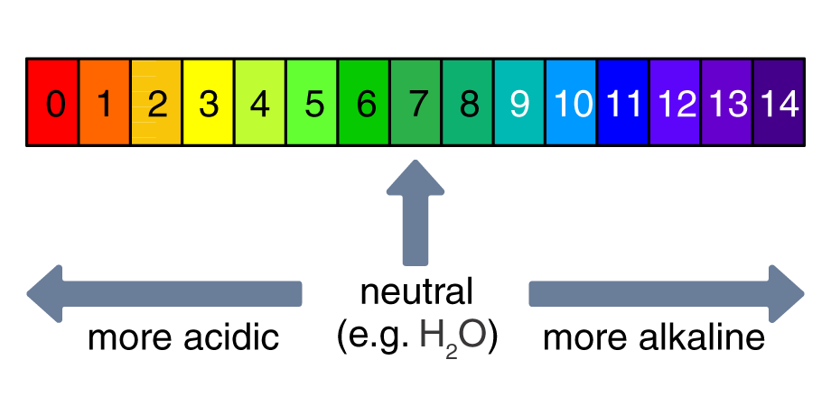
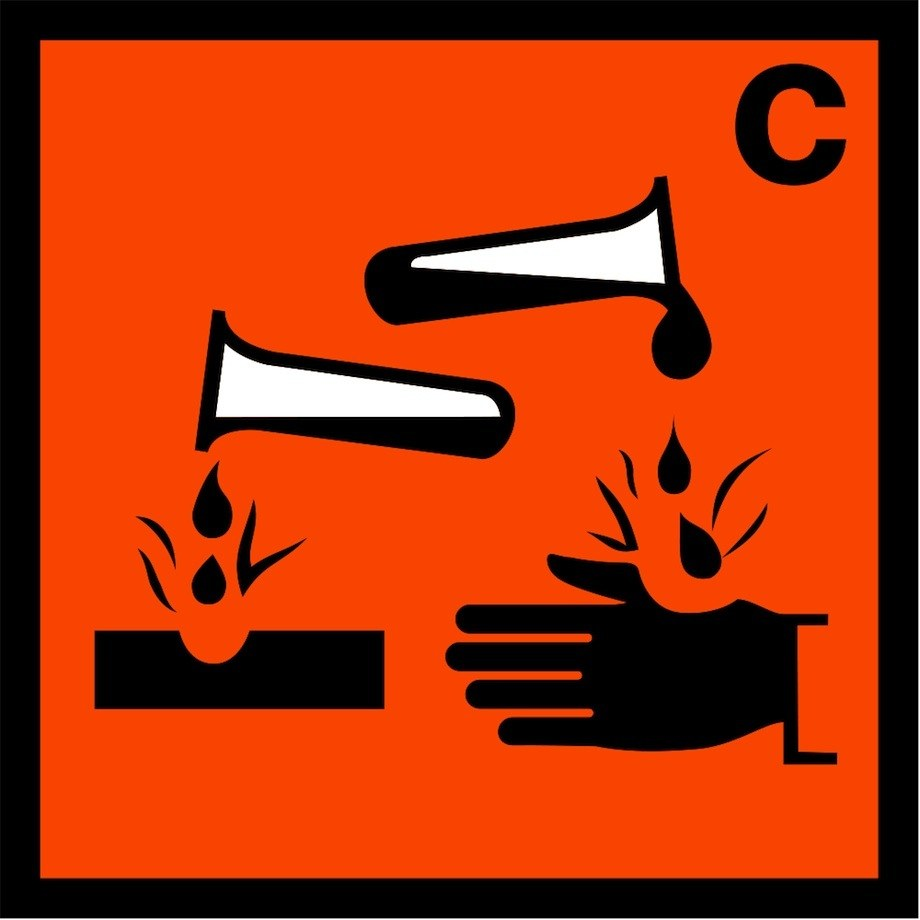
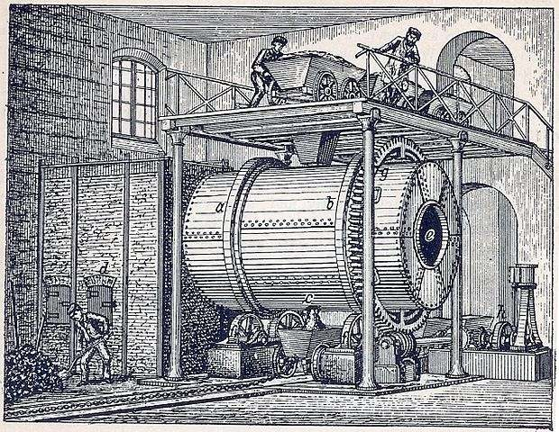

Stomach acid kills bacteria and helps digestive enzymes break down food.
But excess stomach acid (HCl) causes indigestion, which in turn can cause “heartburn” if the acid moves up the oesophagus towards the mouth.
Medicines (antacids) can relieve indigestion by neutralising the acid. These medicines contain bases: compounds that react with acids. If a base is soluble it is called an alkali.
Medicines are expensive, yet are sometimes similar to other common chemicals found in the home, e.g. baking powder, a carbonate that neutralises acids. Some people use these alternative remedies instead.
Neutralisation of acids
The only substances that can neutralise acids are metal carbonates, metal oxides and metal hydroxides. These substances are alkalis:
acid + metal carbonate ⇒
salt + water + carbon dioxide
Salts are produced in each case. The salt produced depends on the acid:

Copper sulfate – a blue salt in solution – is produced when CuO reacts with H2SO4
Edexcel: pH is a measure of acidity or alkalinity. On the pH scale, 0 is most acid, 14 is most alkaline.

Edexcel: A universal indicator such as damp Litmus paper can be used to test pH. Red Litmus turns blue in alkaline conditions; blue Litmus turns red in acidic conditions.
Edexcel: Alkalis such as sodium hydroxide, and also acids such as concentrated sulfuric acid, can be corrosive and therefore dangerous. We use hazard symbols to identify and warn about such chemicals:

Hazard symbol for “corrosive”
Uses and abuses of alkalis (OCR)
Even before the industrial revolution, alkalis were used:
to neutralise acids in soils
to make glass
to make soap from fats/oils
to make alum, a chemical that fixes dyes to cloth.
The alum manufacturing process created a very acidic solution. Natural alkalis like burnt wood ash or human urine were used as neutralisers.
As Britain and neighbours like France industrialised in the 19th century, new sources of alkalis were needed for the expanding soap and glass industries. The Frenchman Nicolas Leblanc invented a process to make sodium carbonate from chalk/limestone, common salt (NaCl) and coal.
However, the Leblanc process was highly polluting, releasing huge amounts of hydrogen chloride gas (HCl), making nearby land overly acidic, and hydrogen sulfide (H2S) with its overpowering smell.
 In the 19th century, large-scale chemical processes such as the Leblanc process were major man-made pollutants
The industry was eventually regulated by law. Acts of Parliament were passed and inspectors began to check how much acid was being released by industrial chimneys.
Later in the century a process was invented to produce chlorine by mixing HCl gas with oxygen. Chlorine has different properties from hydrogen chloride (see Electrolysis, Section 10.3). A waste product had been converted into a useful chemical.